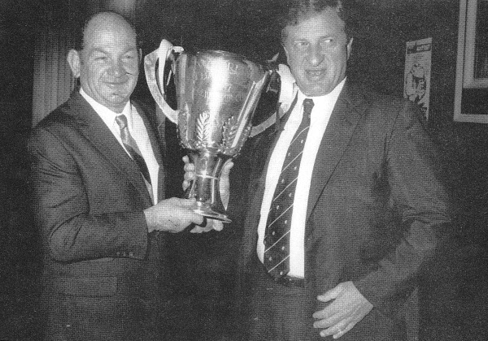

A tribute to my grandfather
Bruce Comben
A Carlton player from the 1950s

Bruce Comben & John Elliott with the 1987 Premiership Cup
Some facts about Bruce
- Born on 25 October, 1930
- Died on 15 December, 2002
- Owned multiple supermarkets
- Made his debut for the Carlton Football Club Round 1 of the 1950 season
- Two time best and fairest winner for Carlton Football Club
More information about Bruce can be found at his
Wikipedia page